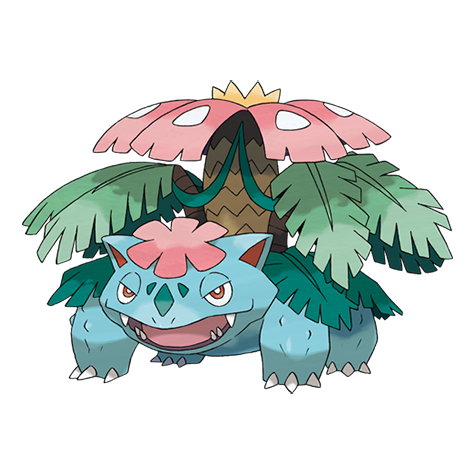

Weaknesses
Venusaur, being a Grass/Poison-type Pokémon, has specific weaknesses that can be exploited in battles:
Fire-type Moves: Fire-type moves are super effective against Grass-types like Venusaur. They can deal significant damage and pose a significant threat.
Ice-type Moves: Ice-type moves are also super effective against Venusaur. These moves can exploit its Grass typing and deal extra damage.
Flying-type Moves: Flying-type moves are generally strong against Grass-types, including Venusaur. They can be used to target its weakness effectively.
Psychic-type Moves: Psychic-type moves are super effective against Poison-types like Venusaur. While it's not a double weakness, it can still deal considerable damage.
Bug-type Moves: Bug-type moves are super effective against Grass-types and can cause extra damage to Venusaur.
It's essential to keep these weaknesses in mind when using or battling against Venusaur, as exploiting them can be a key strategy to defeating it in Pokémon battles. Additionally, Venusaur's dual typing provides it with some resistance to Ground-type moves, which are typically strong against Poison-types, but it's still susceptible to the aforementioned types of attacks.
Veiw Main Weakness
Strengths
Venusaur has several strengths that make it a formidable Pokémon in battles:
Bulkiness: Venusaur boasts decent defensive stats, especially in terms of HP and Special Defense. This makes it capable of taking hits from various opponents, allowing it to endure in battles.
Dual Typing: Its dual Grass/Poison typing provides Venusaur with resistances to common status conditions, such as poison and paralysis. This can be advantageous in battles, as it reduces the effectiveness of certain moves and abilities.
Versatile Moveset: Venusaur has access to a wide range of moves, both Grass-type and non-Grass-type, which allows it to adapt to various situations. It can learn moves like Solar Beam, Sludge Bomb, Earthquake, and more, expanding its tactical options.
Mega Evolution: In certain Pokémon games, Venusaur has the ability to Mega Evolve into Mega Venusaur. Mega Venusaur gains increased defenses and the Thick Fat ability, which reduces the damage it takes from Fire- and Ice-type moves. This makes it even bulkier and more challenging to defeat.
Status Moves: Venusaur can learn status moves like Sleep Powder and Toxic, which can be used to disrupt opponents or whittle down their health over time. Its ability to induce sleep with Sleep Powder, in particular, can be a game-changer in battles.
Levitate Ability: In some situations, Venusaur can have the hidden ability "Chlorophyll," which doubles its Speed in harsh sunlight. This can make Venusaur exceptionally fast under the right conditions.
Overall, Venusaur's combination of defensive capabilities, a versatile moveset, and potential abilities make it a well-rounded Pokémon capable of holding its own in various battle scenarios.
Veiw Main Strength
Mega Evolution
Venusaur's Mega Evolution, known as Mega Venusaur, is a transformation that enhances its already impressive attributes. Upon Mega Evolving, Venusaur undergoes a few notable changes. The large flower on its back, which was previously a vibrant pink, now blooms into a vibrant, full-bodied blossom with rich blue petals. This flower serves not only as a symbol of beauty but also as a source of increased power and defenses. Mega Venusaur gains a significant boost in its defenses, particularly in its Special Defense, making it even harder to damage with special attacks. Additionally, its ability changes to "Thick Fat," which reduces the damage it takes from Fire- and Ice-type moves, further improving its survivability. With its heightened resilience and improved abilities, Mega Venusaur becomes an imposing tank-like Pokémon, capable of withstanding a variety of attacks while delivering powerful Grass and Poison-type moves to its opponents in battles.

Veiw More Venusaur